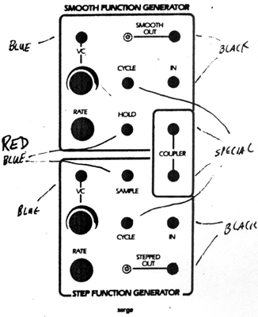
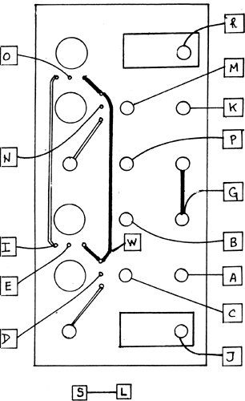

|

Smooth & Stepped Function GeneratorParts for Kit
 For this module to work properly, a jumper must be installed between pad S and pad L. Patch the CYCLE output of the Smooth Function into the IN jack. Monitor the OUTPUT while turning the RATE knob full clockwise. The pitch should be about 100 Hz, and should go to sub-audio rates (as seen from the LED'S) when the knob is turned down. Check that a control voltage into the VC IN jack will control the rate. Note that this is an attenuating input only, with no inverting processing. A high level applied to the HOLD input (greater than about 4.5 volts) should stop the Smooth Function from cycling. With the Smooth Function patched to cycle, connect the CYCLE of the Smooth Function into the SAMPLE input of the Stepped Function. Patch the Stepped Function CYCLE to its IN jack. Using the STEPPED OUT to control the pitch of an oscillator, listen for the pitch change motion as the Stepped RATE is turned up. When fully clockwise, a triangular "staircase" waveform will be generated by the Stepped Function Generator. For best audible rate, the Smooth Function should be fairly slow. As the Stepped RATE knob is turned down, the staircase will slow down.
|